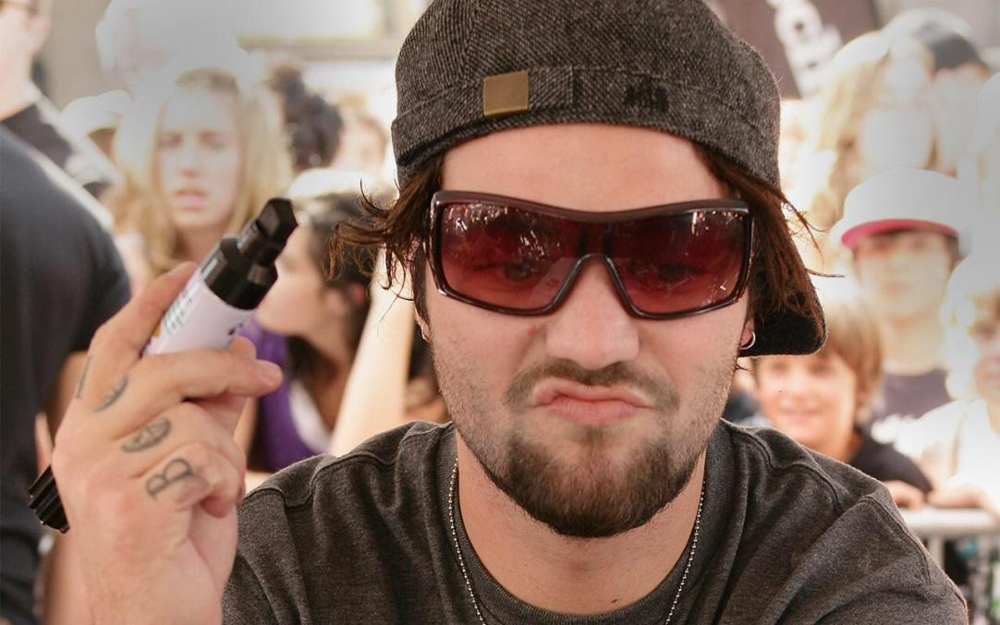
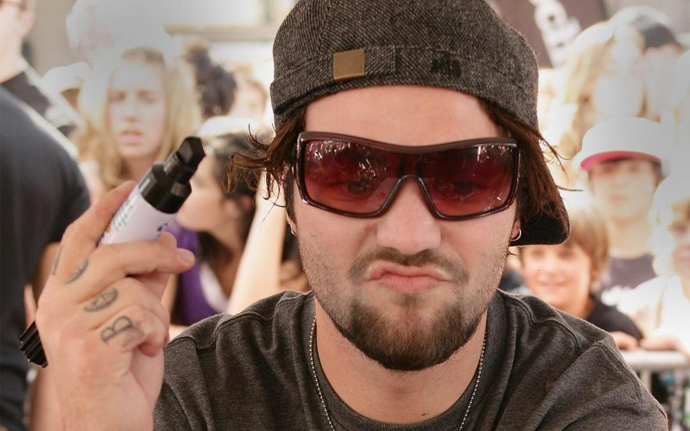

I am not much of a partier but I do like to meet new people and have new experiences. I am an introvert even though I love talking to people I get anxious trying to talk to new people. The best palce to meet new people is at parties, which is unfortunate as I would much rather sit down and destroy people at a videogame than drink in a social setting. Also, I find it uncomfortable being around a group of people drinking, it just makes me nervous. My idea of a good time is hanging out with my current friends and trying to take my introverted self to these extroverted settings. If I was by myself I would never go to parties or probably meet anybody new. It's through my friends that I have the charisma to talk to people I originally wouldn't take the effort to get to know. My favorite way to have fun is probably a long road trip. My friends and I are planning to go on a roadtrip to meet one of our internet friends in Pennsylvania over Christmas break!
 
